版本：V6.0
编制单位：[艾维登]
编制日期：2026 年 8 月 25 日
密级：内部资料
维护内容
| # | 维护内容 | 版本 | 维护人 | 维护日期 |
|---|---|---|---|---|
| 1 | 基于现状诊断与业务访谈，完成企业架构设计初稿（业务/数据/应用/技术架构） | V0.1 | 孙菩 | 2026.7.15 |
| 2 | 对齐飞书多维表格接口台账，校准 IF-93~101 十六个 L3 集成流程、210 个 L4 场景 | V1.0 | 孙菩 | 2026.8.18 |
| 3 | 补充 22 系统应用架构四象限、TOGAF 4A 集成视图、技术架构 PCE 与 Fiori 组件 | V2.0 | 张洋 | 2026.8.20 |
| 4 | 形成企业架构设计报告 V3.0 定稿，配套架构过渡路线、ARB、KPI 与专题落地映射 | V3.0 | 张洋 | 2026.8.21 |
| 5 | 形成企业架构设计报告 V4.0 定稿，添加桑基图按照汇总+明细展示的两层逻辑，把对701条需求的流向做描述和展示。阐述清楚逻辑，如何分析原始需求，并抽象总结出业务痛点诊断，进一步根据TOGAF 4A架构，把业务痛点匹配到4A架构，匹配到23个高价值场景，最终按照 2026、2027、2028 这 3 年来划分项目卡片。 | V4.0 | 陈宇清 | 2026.8.21 |
| 6 | 在架构设计报告中，添加对 GB/T 43439-2023国标的参考。 | V5.0 | 陈宇清 | 2026.8.22 |
| 7 | 完成 V6 版本视觉校验；统一全量表格表头为 #0070C0 蓝底白字；修复 9 处图片比例失真；补充 rId18 图注并重新编号图 5-1/5-2。 | V6.0 | 陈宇清 | 2026.8.25 |
1. 报告概述
本报告在《数字化转型现状诊断报告》的调研结论基础上，依据 TOGAF 9.2 架构开发方法（ADM），为佛山照明 SAP S/4HANA 升级项目（Greenfield 实施，预计 2027 Q1 上线）建立 L1–L3 企业架构蓝图。报告覆盖业务架构、数据架构、应用架构、技术架构四层，并将交付团队 23 个专项方案（S01–S23）与探索阶段需求库（215 条架构级证据）正式映射到架构，形成"能力域 + 专题落地 + 已决策"三位一体的架构基线。所有架构决策均经 ARB（架构治理委员会）评审，作为后续配置设计与接口开发的不可更改基线。
报告编制范围与诊断报告一致：组织范围涵盖集团总部及 19 家法人（含泰国 FZ40、德国 FZ33），系统范围聚焦 SAP S/4HANA PCE 核心及 22 个当前周边应用系统，业务范围覆盖研发/生产/供应链/销售/质量/财务/主数据/IT 治理八大业务域。
1.1 需求溯源与五层追溯分析
基于探索阶段收集的 701 条原始业务需求，通过语义分析与主题聚类，建立了“原始需求域 → 业务痛点诊断 → TOGAF 4A 架构映射 → 23 个高价值场景 → 11 个项目卡片”的五层追溯体系。本章以两张桑基图（汇总视图 + 明细追溯视图）为载体，完整呈现从需求收集到项目落地的全链路分析逻辑。
1.1.1 701 条原始需求全景概览（汇总视图）
探索阶段通过问卷调研、管理层访谈、系统现状梳理共收集 701 条原始业务需求，覆盖 10 大业务域：销售与渠道（189 条）、采购与供应（104 条）、计划与制造（81 条）、仓储物流（69 条）、主数据与 IT（70 条）、财务与资金（149 条）、研发与 BOM（49 条）、质量（36 条）、数据分析（19 条）、管理协同（107 条）。
下图以桑基图汇总形式，展示 701 条需求从原始业务域出发，经业务痛点抽象、TOGAF 4A 架构归类，最终汇聚到 23 个高价值场景和 3 个治理桶的全景流向：
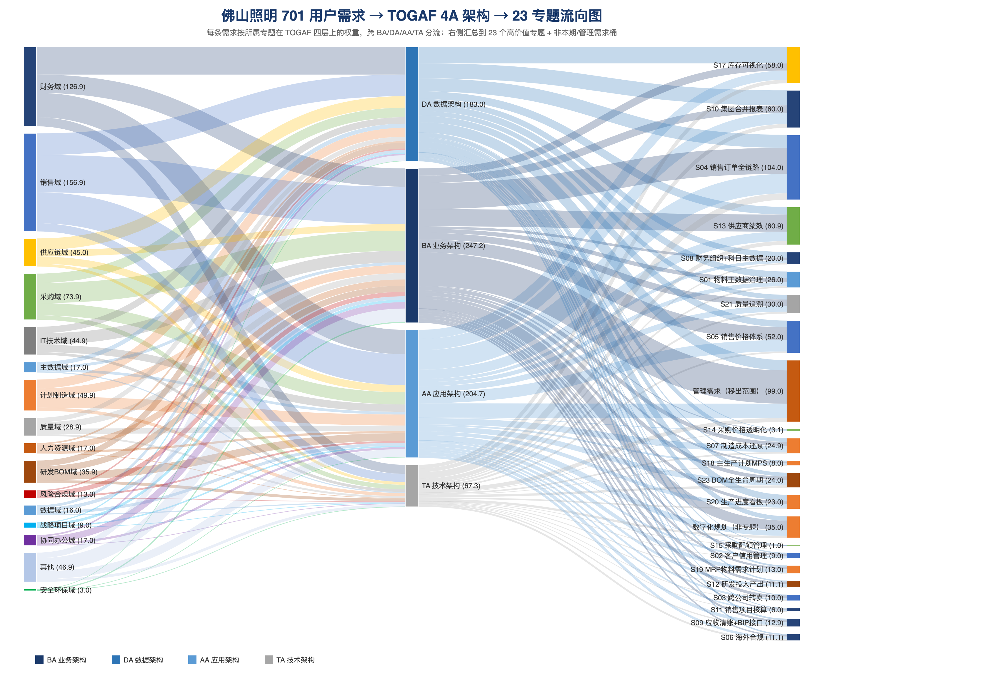
图解逻辑：左侧为 10 个原始需求业务域，按需求条数着色；中间四层依次为 23 个一级业务痛点、4 个 TOGAF 架构域（BA 业务架构 / DA 数据架构 / AA 应用架构 / TA 技术架构）、23 个高价值场景 + 3 个治理桶（管理需求-范围外 / 管理需求-移出 / 数字化规划-非专题）。连线的宽度代表需求条数的流量，颜色延续来源业务域的标识色，实现从原始域到场景的一眼追溯。
1.1.2 五层追溯分析方法论
从 701 条原始需求到 11 个项目卡片，我们建立了严格的五层抽象与匹配逻辑，确保每一条需求都有明确的追溯路径：
第一层：原始需求域（Domain）
701 条需求在收集阶段即按业务领域标注归属（如 SD 销售、MM 采购、PP 计划、FI 财务等）。每条需求包含原始描述、业务域、SAP 模块标签，构成追溯的起点。
第二层：业务痛点诊断（Pain Point）
通过语义分析与关键词匹配，将 701 条需求聚类为 23 个一级业务痛点（P01–P23），并进一步细化为 78 个二级子痛点（P01a–P23b）。例如：
P05 “销售订单履行全链路不透明” ← 聚合了销售域中关于订单可视、交期预警、物流跟踪等 16 条需求；
P17 “报表分析依赖手工，经营口径不一” ← 聚合了财务域中关于合并报表、管理报表、经营分析等 21 条需求；
P13 “供应商协同与采购管控不足” ← 聚合了采购域中关于供应商评估、价格透明、配额管理等 11 条需求。
痛点诊断的核心原则是：同一痛点下的需求在业务逻辑上具有强相关性，且可通过同一套架构方案（模块配置 + 流程优化 + 数据治理）系统性解决。
第三层：TOGAF 4A 架构映射（Architecture）
每个业务痛点根据其解决所需的架构能力，映射到 TOGAF 四层架构中的一层或多层：
BA 业务架构（372 条需求）：流程重构、组织变革、业务规则设计，如 OTC/PTP/MTC 端到端流程、信用管理流程、跨公司转卖流程；
DA 数据架构（218 条需求）：主数据治理、数据标准、数据质量、合并报表数据模型，如物料主数据统一、BP Partner 模型、集团合并范围；
AA 应用架构（135 条需求）：应用系统选型、接口设计、集成架构，如 CPI 集成中枢、Fiori 应用、外围系统保留/替换决策；
TA 技术架构（77 条需求）：基础设施、部署模式、安全架构、监控运维，如 PCE 云部署、Cloud ALM、GRC 审计日志。
4A 映射遵循“痛点解决必须触及的架构层”原则：若痛点仅通过流程优化即可解决（如审批流程），则映射到 BA；若涉及数据模型重构（如统一科目表），则同时映射到 BA + DA；若涉及系统集成（如与财务共享对接），则映射到 BA + AA。
第四层：高价值场景（Scenario）
在 4A 架构映射的基础上，将关联的痛点进一步聚类为 23 个高价值场景（S01–S23）和 3 个治理桶。每个场景是一个可交付、可验收的业务-技术一体化方案，例如：
S04 “销售订单全链路” ← 聚合 P05（订单不透明）、P06（价格体系分散）、P07（信用管控人工化）等痛点，横跨 BA + DA + AA；
S10 “集团合并报表” ← 聚合 P17（报表手工）、P08（跨公司转卖流程繁琐）、P03（主数据缺失）等痛点，横跨 BA + DA；
S16 “产前齐套性预警” ← 聚合 P01（产销协同断层）、P02（库存可视化不足）等痛点，核心落在 BA + DA。
场景划分的原则是：同一场景下的痛点在业务流程上紧密衔接，且可在同一项目实施周期内（一期或二期）集中交付。
第五层：项目卡片（Project Card）
最后，根据场景的优先级、依赖关系、资源约束和广晟集团合规时间线，将 23 个场景归纳为 11 个项目卡片（PC01–PC11），并按三年实施路径划分：
| 年度 | 项目卡片 | 覆盖场景 | 核心目标 |
|---|---|---|---|
| 2026 基础建设年 | PC01 S/4HANA PCE 云平台数字底座 PC02 主数据治理与数据规范专项 PC03 集成架构与 CPI 接口收敛 | S01, S08, S18, S19, S23 + 基础设施/集成底座 | 完成 Greenfield 环境搭建、主数据标准制定、核心接口框架搭建，为 2027 年业务模块上线奠定数据与集成基础。 |
| 2027 核心实施年 | PC04流程蓝图与变革管理 PC05 财务核心与全球合并 PC06 销售订单与信用全链路 PC07 供应链计划与制造协同 PC08 质量追溯与研发一体化 | S02–S07, S09–S16, S20–S22 | 完成核心业务模块（FI/CO/SD/MM/PP/QM/PS）配置与上线，打通 OTC/PTP/MTC 三大端到端流程，实现泰国工厂本地化合规。 |
| 2028 数据智能年 | PC09 海外本地化合规深化 PC10 数据智能分析平台 PC11 生态协同与模式创新 | S06 深化, S11, S12, S17 + BI/AI 创新场景 | 基于 2027 年积累的数据资产，构建智能分析平台，实现预测性维护、智能排产、客户需求预测等数据驱动应用。 |
1.1.3 五层明细追溯图
下图是五层追溯的明细视图，展示了从 10 个原始需求域、23 个一级痛点、4A 架构域、23 个高价值场景到 11 个项目卡片的完整链路。每个节点的颜色按来源业务域着色，连线的颜色与来源域一致，实现跨五层的色彩追溯：
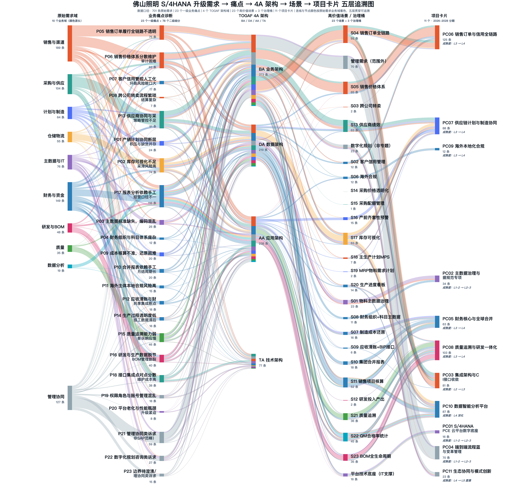
读图方法：从左至右追踪任意一条彩色连线，即可还原一类需求从原始业务域出发，经过哪些痛点抽象、被归类到哪个架构域、最终落入哪个高价值场景和项目卡片。例如，追踪销售与渠道域的橙红色：从左侧“销售与渠道”出发，流经 P05（销售订单履行不透明）、P06（销售价格体系分散维护）、P07（客户信用管控人工化）等痛点，汇入 BA 业务架构，最终到达 S04（销售订单全链路）场景和 PC06（销售订单与信用全链路）项目卡片。这种色彩编码的追溯机制，确保了从 701 条原始需求到 11 个项目卡片的全链路可审计性。
2. 架构总论
2.1 TOGAF ADM 相位与本项目映射关系
本报告采用 TOGAF 9.2 架构开发方法（Architecture Development Method，ADM）作为企业架构设计的核心方法论。ADM 是一套经过全球数千个企业架构实践验证的迭代式架构开发方法，由 8 个相位（Phase）和一个持续迭代的需求管理中心构成。
本项目重点关注四个核心相位，形成四层架构体系：
| ADM 相位 | 中文名称 | 本项目输出 | 完成时间 |
|---|---|---|---|
| Phase A | 架构愿景（ Architecture Vision ） | 转型愿景、架构驱动因素、架构原则、利益相关方分析 | 2026 年 6 月（本报告第二章） |
| Phase B | 业务架构（ Business Architecture ） | 业务能力地图（ L1-L3 ）、端到端流程设计（ OTC/PTP/MTC ） | 2026 年 7 月（本报告第三章） |
| Phase C | 信息系统架构（ Information Systems ） | 数据架构（ MDG 主数据设计） + 应用架构（系统全景、集成架构） | 2026 年 7-8 月（本报告第四、五章） |
| Phase D | 技术架构（ Technology Architecture ） | SAP PCE 基础设施、三套环境、 BTP/CPI 技术组件 | 2026 年 8 月（本报告第六章） |
| Phase E/F | 机会与解决方案 / 迁移规划 | 架构过渡路线图、迁移策略（ Greenfield 数据迁移） | 2026 年 9 月（第三份交付物） |
| Phase G/H | 架构实施治理 / 架构变更管理 | 架构治理机构、变更控制流程 | 2026 年 9 月起持续（本报告第八章） |
架构构建块（ABB）指按照架构标准定义的能力或功能单元（例如"主数据管理能力"）；解决方案构建块（SBB）指满足 ABB 的具体实现方案（例如"SAP MDG 模块"）。本报告在 L2-L3 层级完成从 ABB 到 SBB 的映射。
2.2 架构设计原则
以下 12 条原则经过佛照项目团队与艾维登架构团队联合确认，适用于本项目所有架构设计工作，优先级高于具体的技术选型和实施方案。
业务架构原则（GP / BA）
| 序号 | 原则名称 | 描述 | 对 S/4HANA 的影响 |
|---|---|---|---|
| GP-1 | 业务主导 | 架构决策以业务价值为出发点，技术服从业务，不为技术而技术 | SAP Greenfield 方法论优先采用 SAP 标准流程，减少不必要定制化开发 |
| GP-2 | 数据驱动 | 数据是集团最重要的战略资产，所有系统以数据质量和数据可见性为核心设计约束 | MDG 作为主数据治理中枢，全业务域数据流向 S/4HANA 统一汇聚 |
| GP-3 | 最大化标准化 | 优先采用 SAP S/4HANA 标准功能，自定义开发（ Z 程序）须经架构评审委员会批准 | 减少升级负担， ECC 现有 Z 程序按 " 小改 / 中改 / 重写 / 废弃 " 分类处理 |
| GP-4 | 云原生优先 | 优先采用 SAP BTP 上的云原生扩展，而非传统 ABAP 核心定制 | 扩展开发部署在 BTP 侧扩展（ Side-by-Side ），保持 S/4HANA 核心整洁 |
| BA-1 | 端到端流程完整性 | 业务流程设计必须覆盖完整的端到端价值链，不允许存在流程断点或数据孤岛 | 跨系统流程衔接须统一在 CPI 上闭环 |
| BA-2 | 集团管控统一性 | 19 家法人必须使用统一的流程模板和数据标准 | 泰国、德国法人须支持多语言、多币种、本地合规 |
应用架构原则（AA）
| 序号 | 原则名称 | 描述 |
|---|---|---|
| AA-1 | 松耦合集成 | 所有系统间集成必须通过 SAP CPI 进行，禁止系统间点对点直连（ Point-to-Point ） |
| AA-2 | API 优先 | 新开发的集成接口优先采用 RESTful API 或 OData ；历史系统 IDoc/BAPI 接口在 CPI 中封装，对外统一暴露 API |
数据架构原则（DA）
| 序号 | 原则名称 | 描述 |
|---|---|---|
| DA-1 | 单一可信数据源（ SSOT ） | 每类主数据只有一个权威系统（ SOR ）维护，其他系统只读使用。物料主数据 SOR 为 S/4HANA MDG ，通过 CPI 向 WMS/MES/PLM 同步 |
| DA-2 | 数据生命周期管理 | 所有主数据必须有明确的生命周期状态（创建 / 审核 / 启用 / 停用 / 归档），由 MDG 工作流控制 |
技术架构原则（TA）
| 序号 | 原则名称 | 描述 |
|---|---|---|
| TA-1 | 安全设计内置 | 最小权限原则、职责分离（ SoD ）、关键操作审计日志、数据传输加密（ TLS 1.3 ） |
| TA-2 | 高可用与容灾 | S/4HANA PCE 生产系统 RTO ≤ 4 小时， RPO ≤ 1 小时 |
2.3 架构变革核心驱动因素
| 维度 | 范围说明 |
|---|---|
| 组织范围 | 佛山照明集团总部及 19 家法人（含泰国 FZ40 、德国 FZ33 ）；咨询阶段重点：总部禅城 + 高明分公司 |
| 系统范围 | SAP S/4HANA PCE 核心系统 + 22 个外围应用系统（ PLM/MES/WMS/SRM/CRM/ 财务共享 /OMS/ 防伪防窜 /HR/ 电子签章等） |
| 业务范围 | 研发 / 生产 / 供应链 / 销售 / 质量 / 财务 / 主数据 /IT 治理全 8 个业务域 |
| 时间范围 | 目标架构（ TO-BE ）面向 2026-2028 年；过渡架构（ Transition ）面向 2026 年 6 月 -2027 年 1 月 31 日实施期 |
| 排除范围 | CRM/OA/HR 系统内部改造费用不含在本项目范围；仅通过 CPI 集成接入 |
3. 业务架构（TOGAF Phase B）
3.1 六大架构驱动因素
基于管理层访谈（董事长余中民、总经理张学权、副总经理李泽华等高管）、701条业务调研问题（截至 7.31）和佛照 2025 年年报数据分析，识别出以下六大架构驱动因素：
| # | 驱动因素 | 业务背景 | 架构响应 | 优先级 |
|---|---|---|---|---|
| BD-1 | 全球化合规需求 | 泰国 FZ40 工厂启动运营， ECC 不支持泰铢记账、泰国增值税（ 7% ）和预提税申报；德国 FZ33 需符合 IFRS 和 EU 税务合规；海外收入占比 20.8% 且仍在增长 | S/4HANA PCE 原生支持多币种、多语言、多税务体制； DRC 模块支持电子发票和泰国税务申报； Group Reporting 实现多准则合并 | 高 |
| BD-2 | 集团管控低效 | 19 家法人收购后系统各自独立，合并报表靠系统外手工抵消，月结需 7-8 个工作日；经营分析会数据来自手工汇总，存在口径不一致风险 | S/4HANA 统一集团平台； Group Reporting 自动合并抵消； MDG 确保跨法人数据口径一致 | 高 |
| BD-3 | 主数据混乱导致运营断点 | 物料主数据多部门分散维护，无统一管理平台；一物多码、一客多码； MRP 因 BOM 维护不及时跑不起来；截至 2025 年已积累 6.2 万个物料主数据 | SAP MDG 作为主数据治理中枢，统一物料 /BP/ 财务主数据全生命周期；建立主数据评审委员会 | 高 |
| BD-4 | 系统性能制约 | ECC 上线已 17 年， 2024 年产生 430 万出入库凭证、 110 万销售订单；物料账跑批需 7-8 小时 | S/4HANA 基于 HANA 内存数据库，核心操作性能提升 10-100 倍；月结关账 单体报表 3-4 天，合并报表6-7 天（不含燎旺的话 5 天） → 2 天（单体） | 高 |
| BD-5 | 研产供销协同断裂 | 设计 BOM→ 制造 BOM→ 成本 BOM 转换靠手工； MES/WMS 与 SAP 无完整集成；销售预测准确率 30-40% ；定价审批 OA 流程 7-8 环节 | Greenfield 全新架构打通 PLM→SAP PP→MES→EWM 完整数字链； CPI 实时集成； SD 启用标准定价条件方案替代 OA 审批 | 中 |
| BD-6 | 盈利能力持续恶化 | 2025 年扣非净利率仅 0.95% （行业底部）；成本核算粗放；库存管理不透明 | CO 模块规范成本核算；启用利润中心和段实现多维盈利分析； IBP （长期）优化库存和计划协同 | 中 |
3.2 目标架构愿景与利益相关方
目标架构愿景（Target Architecture Vision Statement）：
以 SAP S/4HANA PCE 为数字化核心底座，以 SAP MDG 为主数据治理中枢，以 SAP CPI 为集成神经网络，构建覆盖佛照集团 19 家法人、贯通研产供销财全价值链的统一智造运营平台。通过数据标准化、流程标准化、管控一体化，实现从"分散管理的多元化集团"向"数据驱动的智造型集团"的跨越，支撑佛照在全球照明与汽车灯具市场的核心竞争力持续提升，2027 年 Q1 目标上线。
量化目标（建议）：月结关账天数 7天 → 5天 ｜ 存货周转天数 109天 → 95天（理想状态目标 60 天） ｜ 应收周转天数 90天 → 80天 ｜ 主数据准确率 <70% → 90% ｜ 合并报表出具效率提升 60% ｜ MRP 计划有效执行率 <30% → 75%。
利益相关方关注点
| 利益相关方 | 职务 | 核心关注点 | 架构响应 |
|---|---|---|---|
| 余中民 | 董事长 | 19 家法人统一管控；海外合规；上市信息披露合规 | Group Reporting 统一合并； DRC 合规； Phase A 架构愿景确认 |
| 张学权 | 总经理 | 分业务线盈利透明度；经营报表效率； BOM 断点损失量化 | CO 利润中心；实时报表（ Fiori 分析应用）； MDG BOM 治理 |
| 李泽华 | 副总经理（项目主持人） | 指导委员会运作；关键用户承诺；上线策略；数据授权边界 | 架构过渡规划；治理机制 |
| 李一帜 | 财务负责人 | 19 家法人合并效率；成本核算统一性； DSO 监控 | Group Reporting + FI-CA + CO 统一成本核算 |
| 企业管理部 | 企管部门 | 统一数据口径，打通各部门业务流程的断点 | MDG 主数据管理系统，统一管理主数据的创建、变更和分发 |
| 数智化部 | IT 部门 | Z 程序迁移复杂度；接口改造工作量； PCE 运维模式 | Custom Code 扫描； CPI 集成架构； Cloud ALM |
| 各事业部负责人 | 业务用户 | 系统操作效率； Fiori 体验；功能满足 | Fiori 应用清单； UAT 覆盖率 100% |
3.3 当前 vs 目标架构能力成熟度
| 架构域 | AS-IS （当前状态） | TO-BE （目标状态） | 关键差距 |
|---|---|---|---|
| 业务架构 | 流程分散，无端到端标准流程；各事业部各自为政 | 统一业务流程模板；端到端数字化贯通；最小化人工干预 | 流程再造与标准化是最大挑战 |
| 数据架构 | 无统一主数据平台；多部门分散维护；数据质量低 | MDG 作为 SOR ；统一编码规则；数据质量 SLA （物料准确率 99% ） | 数据清洗工作量大，需提前 6 个月启动 |
| 应用架构 | SAP ECC 6.0 + 多个分散外围系统，无集成平台，点对点接口 | S/4HANA PCE 为核心； CPI 为集成中枢；系统边界清晰 | 22 系统接口改造， SRM/WMS 集成为高优先级 |
| 技术架构 | On-Premise 部署（ 17 年老系统）；性能瓶颈 | SAP PCE 私有云部署； HANA 内存计算；三套环境 | 网络带宽和终端改造是前置条件 |
4. 业务能力与流程设计
4.1 八大业务能力域
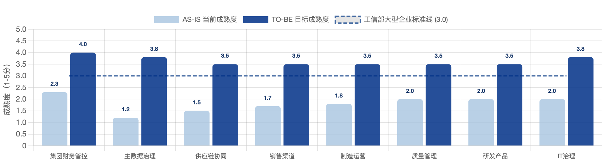
业务能力地图（BCM）是业务架构的最高层级视图，描述企业"需要做什么"。L1 层级将佛照业务能力划分为 8 个核心能力域：
- 多法人统一核算 ｜ 合并报表自动化 ｜ 多币种/多准则 ｜ 税务合规（DRC）
- 统一编码标准 ｜ MDG 治理平台 ｜ 主数据生命周期 ｜ 数据质量监控
- MRP 有效运行 ｜ 物料齐套管理 ｜ 库存透明化 ｜ EWM 高级仓储
- 定价策略自动化 ｜ 信用管理 ｜ 销售预测 ｜ 经销商管理
- 生产计划精准化 ｜ MES 深度集成 ｜ 产能规划 ｜ 生产成本核算
- 全链路质量追溯 ｜ 批次条码管理 ｜ 质检设备集成 ｜ 质量成本统计
- EBOM→MBOM 自动转换 ｜ ECN 变更管理 ｜ 产品成本估算
- CPI 集成治理 ｜ Cloud ALM 运维 ｜ 数字化组织建设
其中 ①②③ 为一期 S/4HANA 实施的核心优先领域；④⑤⑥ 为一期同步推进领域；⑦⑧ 在一期建立基础，二期深化。
4.2 关键业务场景设计
销售与渠道域（SD）
| 子场景 | AS-IS 痛点 | TO-BE 设计（ S/4HANA SD ） |
|---|---|---|
| 价格管理 | 定价审批走 OA 7-8 环节，完成手工维护 SAP ；促销定价靠手工 | SD 价格条件方案配置；定价审批通过 CPI 从 OA 触发，自动更新 SAP 价格记录 |
| 信用管理 | 信用管理靠线下台账；营销与财务口径不统一 | 启用 FI-CA 信用管理；客户 + 公司代码 + 销售组织三维信用控制；超限自动冻结订单 |
| 经销商管理 | 经销商库存无系统可见性；防串货靠线下；一客多码 | 经销商 VMI 管理；与防伪防窜系统 CPI 集成； BP 统一后消除一客多码 |
| 国际销售 | 泰国订单开票 / 收款 / 汇兑全靠手工；出口报关无系统支持 | 多币种定价与汇率自动重估；泰国增值税自动计算； DRC 电子发票； GTS 接口（二期） |
生产与研发域（PP/PLM）
| 子场景 | AS-IS 痛点 | TO-BE 设计 |
|---|---|---|
| BOM 管理 | 研究院维护设计 BOM （ PLM ），基地手工转制造 BOM （ ERP ）， ECN 脱节 | PLM→SAP 接口优化（ IF-93 ）； EBOM 触发 MBOM 创建； ECN 在 PLM 发起经 CPI 触发 SAP 物料变更评估 |
| 生产计划 | MRP 跑不起来；排产靠经验；销售预测与库存责任不清 | MRP Live 实时运算； MTO/MTS 混合配置；生产工单自动下达 |
| MES 集成 | MES 仅覆盖高明线路板产线；报工手工录入；良品率无法自动回流 | MES→CPI→S/4HANA PP 接口（ IF-95a ）；报工实时同步；报废自动触发成本差异 |
| 成本核算 | 标准成本系统外估算手工录入；工单结算异常多 | S/4HANA 标准成本估算（ CK11N/CK40N ）；物料分类账（ MLCCS ）替代 ECC 物料账 |
质量域（QM）
| 子场景 | AS-IS 痛点 | TO-BE 设计（ QM 模块） |
|---|---|---|
| 质检执行 | IQC/FQC/OQC 已上线但录入量大；质检设备未与 QM 集成 | 质检设备经 MES→CPI→QM 自动上传；批量处理工具减少人工录入 |
| 质量追溯 | 批次条码未全面覆盖；跨系统批次号脱节 | EWM 批次与 SAP QM 批次统一； CPI 实现 MES/WMS/SAP 批次链路完整 |
| 3C 认证管理 | 3C 证书与物料状态字段冲突；认证靠线下 | 3C 认证状态独立字段；到期自动预警；认证供应商通过 QM 检验计划控制 |
| 质量成本 | 质量成本未建立；隐形质量成本无法统计 | QM 缺陷代码标准化；质量成本通过 CO 内部订单归集 |
4.3 端到端流程关键改进
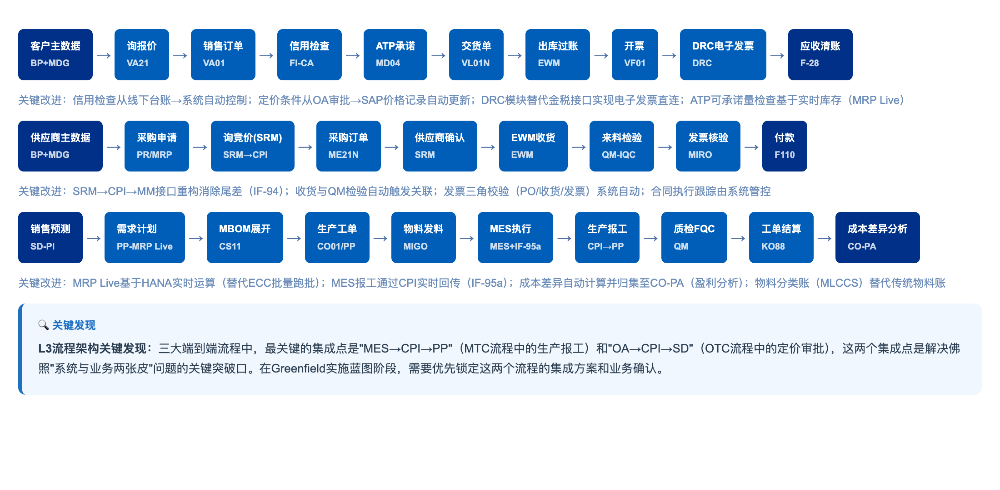
关键改进点：信用检查从线下台账 → 系统自动控制；定价条件从 OA 审批 → SAP 价格记录自动更新；DRC 模块替代金税接口实现电子发票直连；ATP 可承诺量基于实时库存（MRP Live）。SRM→CPI→MM 接口重构消除尾差（IF-94）；MES 报工通过 CPI 实时回传（IF-95a）；成本差异自动计算归集至 CO-PA。
L3 流程架构关键发现：三大端到端流程中，最关键的集成点是"MES→CPI→PP"（MTC 流程生产报工）和"OA→CPI→SD"（OTC 流程定价审批），这两个集成点是解决佛照"系统与业务两张皮"问题的关键突破口。
端到端流程断点与方向
| 端到端流程 | AS-IS 断点 | TO-BE 方向 | SAP 模块 | 优先级 |
|---|---|---|---|---|
| 线索到收款 L2C/OTC | 信用仅出库拦截；报价 7-8 天 OA 审批；预测准确率 30-40% ；应收周转 147 天 | 下单即信用校验； SAP 条件定价自动取价； DSO 目标 ≤70 天 | SD+FICO+MDG | P0 |
| 采购到付款 P2P | SRM 发票无附件；价格断点；货源清单手工维护 | PIR+ 货源清单 + 配额自动化； CPI 打通 SRM-SAP ；三单自动匹配 | MM+SRM | P0 |
| 计划到交付 P2D | MRP 基本不用；缺货率 30-40% ； PLM→SAP 单向； EWM 覆盖不完整 | N+2 滚动 MPS ； MRP Live ； PLM 双向同步； EWM 全面覆盖 | PP+MDG+PLM | P0 |
| 记录到报告 R2R | 月结 15 天；利润中心未用；合并手工抵消 | 月结 ≤8 天；利润中心全面启用（ 5 个事业部）； Group Reporting 自动抵消 | FICO+GR | P0 |
| 研发到量产 I2M | EBOM-MBOM 手工转换；研发费口径差异千万级； ECN 通知脱节 | PLM↔SAP 双向； ECN 自动触发 SAP 物料评估；内部订单分层归集 | PLM+CO | P1 |
| 质量追溯 IQC→FQC | 批次未启用； IQC 与 FQC 数据独立； MES 质检数据为空 | QM 检验批 + 供应商合格率自动计算； QM↔MES 集成；批次全链路追溯 | QM+MES | P1 |
5. 数据架构（TOGAF Phase C Part 1）
5.1 数据治理框架
诊断阶段发现，佛照当前数字化水平低下的根本原因在于主数据混乱和数据标准缺失，这导致 MRP 无法运行、合并报表手工、成本核算不准确等一系列连锁问题。因此，数据架构的建立是支撑其他所有架构领域的前提条件。
数据治理愿景：建立以 SAP MDG 为核心的集团级主数据治理平台，实现"One Data, One Truth"，确保 19 家法人使用统一的数据标准。核心原则：① 单一可信数据源（SOR）原则 ② 数据所有权明确原则 ③ 数据质量门控原则 ④ 数据生命周期管理原则。
数据治理组织架构
| 角色 | 职责 | 人员 |
|---|---|---|
| 数据治理领导小组（委员会 DGC ） | 制定数据策略，审批重大数据标准变更，解决跨部门数据争议 | 总经理 + 各事业部负责人 |
| 数据管理办公室（ DMO ） | 日常数据治理运营，制定数据标准，监控数据质量 | 主管副总经理+企管部+数智化部数据管理骨干（ 3-5 人） |
| 数据所有者（ Data Owner ） | 对特定主数据域的质量和完整性负责，审批创建 / 变更申请 | 物料 → 研究院；客户 → 各事业部；供应商 → 供应链中心；科目 → 财务部 |
| 数据管家（ Data Steward ） | 日常主数据维护操作，在 MDG 中执行审批工作流 | 各业务部门骨干用户（ Key Users ） |
5.2 主数据设计
物料主数据是佛照最关键、问题最严重的主数据域。当前 6.2 万个物料编码，多部门分散创建，无统一编码规则，严重制约 MRP 有效运行。
物料主数据设计
| 设计维度 | TO-BE 设计方案 | SAP 实现 |
|---|---|---|
| 编码规则 | 统一编码总长度 11位，全部为数字分段式编码结构，格式为：9-1-01-01-00001。 | MDG-M 编码生成规则（ Number Range + 5 段结构 ） |
| 视图标准 | 基本数据 1/2 视图（必须） + 销售 / 采购 /MRP/ 会计 / 成本视图 | MDG-M 视图完整性规则，强制必填视图校验 |
| 分类特性 | 色温（ K 值） / 功率（ W ） / 光通量（ lm ） / 防护等级（ IP ） / 认证类型（ 3C/CE/UL ） / 产品系列 | 未来考虑启用SAP 分类系统（ CL01/CT01 ） + MDG 特性管理，分类不体现在物料编码 |
| 3C 认证管理 | 独立维护 "3C 认证状态 " 字段（与物料状态分离），关联到期日，系统自动预警 | 物料增强字段（ Z-field ） + MDG 工作流 |
| 维护流程 | 申请 → 审核 → 创建 → 各工厂视图补充 → 启用 | MDG-M 申请工作流（ 4 步审批） |
| 数据清洗策略 | 识别重复物料 → 按编码规则重新编码 → 完善缺失视图 → 归档已停用（目标 6.2 万 →3.5 万） | LSMW/LTMC 批量导入 + 数据清洗工具 |
物料主数据编码规范
| 段位 | 位数 | 名称 | 说明 |
|---|---|---|---|
| 第1段 | 1位 | 标识位 | 9-该标识属于新编码规则标识，区别原有物料编码规则。 |
| 第2段 | 1位 | 物料大类 | 区分成品、半成品、原材料等物料大类。（1-9） |
| 第3段 | 2位 | 一级分类 | 对应具体的产品、半成品、原材料等大类的一级分类（01-99） |
| 第4段 | 2位 | 二级分类 | 对应具体的产品、半成品、原材料等大类的二级分类（01-99） |
| 第5段 | 5位 | 流水号 | 在同一物料二级分类下的唯一序列号，（00001-99999） |
物料属性标准化建议
| 属性类型 | 标准值示例 | 说明 |
|---|---|---|
| 电压 | 12V, 24V, 110V, 220V, 宽电压(100-277V) | 统一用V为单位 |
| 色温 | 2700K, 3000K, 4000K, 5000K, 6500K | 统一用K为单位，弃用旧代码（65→6500K） |
| 灯头 | E27, E14, GU10, GU5.3, B22, G9, G4 | 标准灯头代码 |
| 显指 | Ra70, Ra80, Ra90, Ra95 | 标准化表述 |
| 材质/表面 | 车铝、压铸铝、旋压、塑料、玻璃、喷白、高光、拉丝 | 标准化 |
| 品牌 | FSL, 汾江, 明匠荟, 3CV, 贝斯诺等 | 使用品牌码表（3位字母数字） |
| ROHS | ROHS, 非ROHS | 二选一 |
| 包装数量 | 10只/箱, 20只/箱, 50只/箱 | 统一格式 |
完整编码结构示例-成品—LED A60球泡
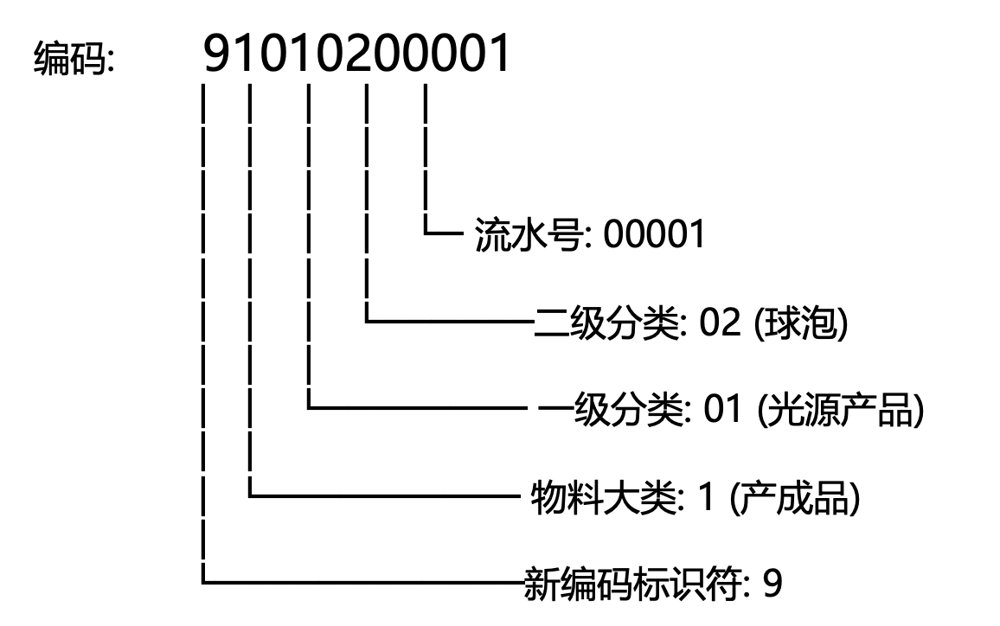
业务伙伴（BP）与财务主数据
| 设计维度 | TO-BE 设计 |
|---|---|
| BP 统一模型 | 采用 BP 统一客户和供应商，废弃 ECC 中 KNA1/LFA1 分离结构，支持一个合作伙伴同时作为客户和供应商 |
| 客户编码规则 | 消除一客多码：按 " 1 位分类+ 7 位流水码" 编码；常规客户国内/国外、常规供应商国内/国外分类管理；关联方集团内部客商/财务（服务）客商/员工 BP 分类管理；历史多码客户合并 |
| 信用管理集成 | BP 主数据含信用控制区配置；信用额度按 " 客户 + 公司代码 + 渠道 " 三维度设定；超限自动冻结销售订单 |
| CRM 同步机制 | CRM 为客户主数据前端 SOR ；经 CPI （ IF-99a ）双向同步至 S/4HANA MDG-BP ； CRM 无法维护的财务字段由财务 Data Steward 在 MDG 补充 |
| 供应商管理 | 按 " 1 位分类+ 7 位流水码" 编码；常规供应商国内/国外分类管理。SRM 为供应商主数据前端 SOR ；经 MDG-BP 审批后同步至 MM ；供应商绩效评分在 SRM 维护，经 CPI 读入 SAP |
业务伙伴（Business Partner）编码规范
| BP类型 | 编码规则 | 编码范围 | 备注 |
|---|---|---|---|
| 关联方集团内部客商BP | 4位（同步公司编码） | FZ01-FZ40 | 和公司编码一致，手工编码 |
| 常规客户BP-国内 | 8位（1位分类+7位流水） | 10000001-19999999 | 自动编码 |
| 常规客户BP-国外 | 8位（1位分类+7位流水） | 20000001-29999999 | 自动编码 |
| 常规供应商BP-国内 | 8位（1位分类+7位流水） | 30000001-39999999 | 自动编码 |
| 常规供应商BP-国外 | 8位（1位分类+7位流水） | 40000001-49999999 | 自动编码 |
| 财务（服务）客商BP | 8位（1位分类+7位流水） | 80000001-89999999 | 自动编码 |
| 员工BP | 8位（1位分类+7位流水） | 90000001-99999999 | 自动编码 |
财务主数据结构
| 主数据对象 | TO-BE 设计 |
|---|---|
| 统一科目表 | 集团公共科目表（ GCoA ） + 各法人操作科目表（ Operating CoA ）； 19 家法人操作 CoA 映射到 GCoA （多对一），确保合并不需要人工调整科目 |
| 利润中心层级 | 利润中心层级与事业部组织架构一一对应：集团总部 → 通用照明 / 车灯 /LED 封装 / 贸易事业部 → 各子公司 / 法人（ PC10/20/30/40/50 ） |
| 成本中心层级 | 成本中心层级与制造组织架构对应：各工厂 → 各车间 / 部门 → 具体成本中心；类型区分生产 / 服务 / 管理 / 研发成本中心 |
| 内部订单 | 研发项目用内部订单管理（支持研发费加计抵扣）；资本性支出用内部订单或 WBS |
5.3 数据迁移策略
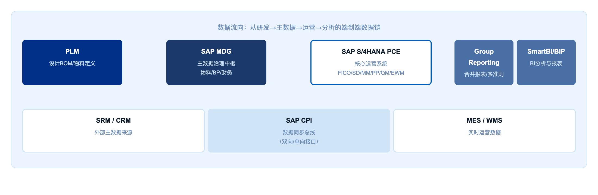
Greenfield 方法论下，不迁移历史 ECC 配置，但必须迁移经清洗的主数据和未清业务数据。数据迁移是上线成功与否的最高风险项。
| 迁移类别 | 具体对象 | 迁移策略 | 质量要求 |
|---|---|---|---|
| 静态数据（主数据） | 物料（清洗后） / BP （消除重复） / 财务主数据 / 组织数据 | LTMC 批量导入；迁移前数据清洗；三次试迁移（ Dev/QAS/PRD ） | 迁移准确率 100% （招标文件强制要求） |
| 期初余额（财务数据） | GL 余额 /AR 未清项 /AP 未清项 / 固定资产 / 成本中心 / 利润中心余额 | F-02/LSMW 批量导入；逐科目对账；财务负责人签字 | 账账相符、账实相符（验收硬性门槛） |
| 未清业务（在途数据） | 未完成销售订单 / 未清采购订单 / 在途生产工单 / 未清发票 | 选择性迁移：优先迁移金额大、周期长的未清单据 | 与业务部门逐笔确认，业务负责人签字 |
| 历史数据（归档） | 历史订单 / 历史凭证 / 历史报表 | 不迁入 S/4HANA ； ECC 保留 3 年只读访问 | 业务确认可接受，建立 ECC 只读通道 |
6. 应用架构（TOGAF Phase C Part 2）
6.1 应用系统处理策略四象限
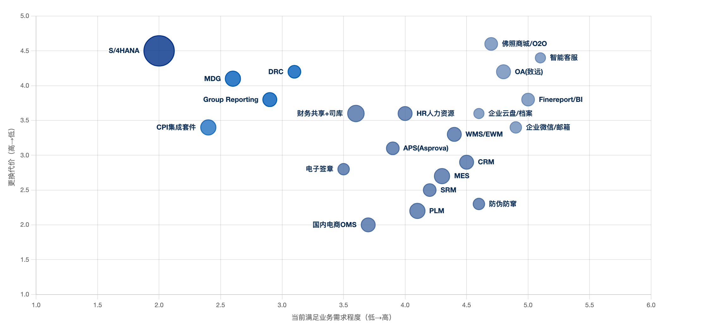
应用架构 L1 层级定义了佛照集团所有核心系统的战略定位，以及在 S/4HANA 升级项目中的处理策略（保留/升级/集成/引入）。经与《数字化转型现状诊断报告》6.1 节系统建设详情对齐，当前共 22 个应用系统，按 TOGAF 四层归类：
前端应用层（6）：SAP Fiori 自助服务、Finereport/SmartBI 报表分析、OA协同审批、佛照商城/O2O/官网、智能客服、企业微信/邮箱
核心业务层（2）：SAP S/4HANA PCE（FICO/SD/MM/PP/QM/EWM/ MDG/Group Reporting/DRC/CPI）、财务共享+司库
业务支撑层（12）：PLM、MES、APS（Asprova 已停用）、WMS/EWM、SRM、CRM、国内电商 OMS（聚水潭/万鸿）、防伪防窜、HR 人力资源、电子签章、档案管理、企业云盘
基础设施安全层（1）：加密系统（国密+文档）
6.2 应用域策略矩阵
| 应用域 | 核心系统 | 策略 | SAP 模块 / 组件 | 关键决策 |
|---|---|---|---|---|
| ERP 核心 | SAP S/4HANA PCE | 升级 | FI/CO/SD/MM/PP/QM/EWM | Greenfield 全新实施； 19 家法人统一平台；不保留 ECC 自定义配置 |
| 集团财务 | SAP Group Reporting | 新引入 | Group Reporting + MDG-GL | 替代手工合并报表；支持 IFRS/ 中国 / 泰国多准则并行 |
| 主数据治理 | SAP MDG | 新引入 | MDG-M + MDG-BP + MDG-GL | MDG 作为主数据 SOR ；工作流控制生命周期 |
| 合规与税务 | SAP DRC | 新引入 | DRC | 中国电子发票直连；泰国 e-Tax Invoice 支持 |
| 集成平台 | SAP CPI | 升级 | CPI iFlow + API Management | 替代点对点接口；所有外围系统经 CPI 集成 |
| 研发管理 | 现有 PLM 系统 | 保留 + 集成 | 经 CPI 与 MDG/PP 集成 | PLM 为 EBOM SOR ； IF-93 同步物料和 BOM |
| 制造执行 | MES 系统 | 保留 + 集成 | 经 CPI 与 PP/QM 集成 | IF-95a 报工 / 质检实时同步 |
| 仓储管理 | 现有 WMS→EWM | 升级至 EWM | EWM （替代 WM ） | 现有 WMS 逐步由 EWM 替代； IF-95b 库存接口 |
| 采购协同 | SRM 系统 | 保留 + 集成 | 经 CPI 与 MM 集成 | IF-94 重构消除尾差； SRM 为供应商 SOR |
| 客户关系 | CRM 系统 | 保留 + 集成 | 经 CPI 与 SD/MDG 集成 | IF-99a 双向同步客户主数据（未来） |
| 财务共享 | 用友共享平台（司库） | 保留 + 集成 | 经 CPI 与 FI 集成（待定，以第三方系统集成开发工作量最小化为原则） | IF-96a 凭证双向同步（ 39 个 L4 ）；财务共享为凭证 SOR |
| 商业智能 | FineReport/ | 保留 + 增强 | 经接口读取 S/4HANA 数据 | Fiori 满足日常管理报表； SmartBI 保留复杂自定义报表 |
6.3 集成架构与接口台账
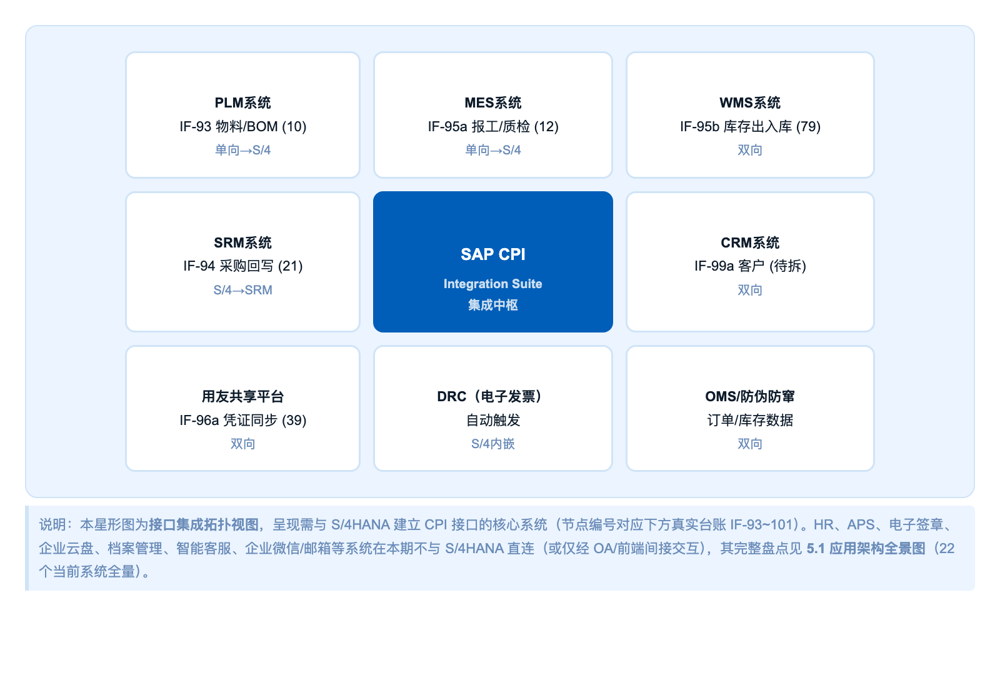
SAP CPI（Cloud Platform Integration，即 SAP Integration Suite）是本次架构中所有系统间集成的唯一中枢。所有外围系统不允许与 S/4HANA 建立点对点直连。
数据来源：佛照集团《接口清单及接口数据流拆解》真实开发台账 [F]。下方按 L3 集成流程聚合的台账取代（L4 场景数为该系统与 SAP 之间已拆解的接口子场景数量）。
6.3.1 接口台账（IF-93 ~ IF-101，16 个 L3 集成流程 / 210 个 L4 接口场景）
| 编号 | 集成流程 | 系统 <-> SAP | L4 场景数 | 代表技术 | 方向 | 本期范围 | 优先级 |
|---|---|---|---|---|---|---|---|
| IF-93 | PLM 物料 /BOM 集成 | PLM→S/4HANA PP | 10 | 主数据分发 / RFC | 单向为主 | 本期 (P0) | 高 |
| IF-94 | SRM 采购供应集成 | SRM↔S/4HANA MM | 21 | RFC （ ZSCF_* ） | 双向 | 本期 (P0) | 高 |
| IF-95a | MES 生产库存集成 | MES↔S/4HANA PP/QM | 12 | BAPI/API | 双向 | 本期 (P0) | 高 |
| IF-95b | WMS 电子材料仓 / 电商仓 | WMS↔S/4HANA(EWM) | 69 | API/REST | 双向 | 本期 (P0) | 高 |
| IF-95c | WMS 高明立体智能仓 | WMS↔S/4HANA(EWM) | 10 | API/REST | 双向 | 本期 (P0) | 高 |
| IF-96a | 财务共享与 SAP 集成 | 用友 BIP↔S/4HANA FICO | 39 | API/ 文件（ BIP 接口） | 双向 | 本期 (P0) | 高 |
| IF-96b | 合同系统集成 | 合同系统 ↔S/4HANA | 15 | 客户主数据查询 / 回写 | 双向 | 本期 (P1) | 中 |
| IF-97a | 聚水潭电商 OMS 集成 | 聚水潭 ↔S/4HANA SD | 8 | RFC （ ZFM_JST_* ） | 双向 | 本期 (P0) | 高 |
| IF-97b | 经销商订货商城集成 | 商城 ↔S/4HANA SD | 6 | RFC （主数据 / 取价） | 双向 | 本期 (P1) | 中 |
| IF-98a | 防伪防窜对接 | 防伪防窜 ↔S/4HANA MM | 11 | RFC （防窜货 _* ） | 双向 | 本期 (P1) | 中 |
| IF-98b | 万鸿开票对接 | 万鸿 ↔S/4HANA FI | 2 | FI 凭证接口 | 双向 | 本期 (P1) | 中 |
| IF-98c | 领星 ERP 集成 | 领星 ↔S/4HANA | 2 | 手工导入 / 导出 | 双向 | 本期外 (N) | 低 |
| IF-99a | CRM 与 SAP 集成 | CRM↔S/4HANA SD | 0* | 待拆解（ 7.1 新上线） | 双向 | 本期外 (N) | 低 |
| IF-99b | OA 审批集成 | OA→S/4HANA SD | 0* | 事件驱动 /API （定价审批） | 单向 | 本期 (P0) | 高 |
| IF-100 | 帆软 BI 报表 | S/4HANA→ 帆软 BI | 3 | OData/JDBC 只读 | 单向 | 本期外 (N) | 低 |
| IF-101 | 顺丰接口 | 顺丰 ↔S/4HANA(WMS) | 2 | 调拨 / 采购创建 API | 双向 | 未来 | 低 |
注：CRM（IF-99a）、OA（IF-99b）标注 0* 表示 L4 接口场景尚未拆解——CRM 因 7.1 新上线接口信息未知，OA 定价审批为本期 P0 须新建。
6.3.2 TOGAF 4A 集成方式建议明细（22 系统全量）[F]
| 系统 | 4A 分层 | 集成模式 | 技术协议 / IF 编号 (L4 数 ) | 数据方向 | SOR 归属 | 本期范围 |
|---|---|---|---|---|---|---|
| SAP S/4HANA PCE | 应用 - 核心 | 集成目标中心 | — | 枢纽 | 交易数据 SOR | P0 |
| SAP MDG | 数据架构 | 主数据分发 | SOA/DRF | MDG→ 各系统 | 主数据 SOR | P0 |
| 财务共享（用友 BIP ） | 应用 - 核心 | 事务集成 | BIP 接口 / IF-96a(39) | 双向 | 凭证 SOR | P0 |
| DRC 电子发票 | 应用 - 核心 | S/4 内嵌 | 标准合规引擎 | 内部 | 税务合规 | P0 |
| PLM | 应用 - 支撑 | 主数据订阅 | RFC / IF-93(10) | PLM→S/4 | EBOM SOR | P0 |
| MES | 应用 - 支撑 | 事务集成 | BAPI / IF-95a(12) | 双向 | 工单执行 | P0 |
| WMS/EWM | 应用 - 支撑 | 事务集成 | API/REST / IF-95b+95c(79) | 双向 | 库存执行 | P0 |
| SRM | 应用 - 支撑 | 事务集成 | RFC(ZSCF_*) / IF-94(21) | 双向 | 供应商 SOR | P0 |
| CRM | 应用 - 支撑 | 待拆解 | 待定 / IF-99a(0*) | 双向 | 客户 SOR | 本期外 (N) |
| 聚水潭电商 OMS | 应用 - 支撑 | 事务集成 | RFC(ZFM_JST_*) / IF-97a(8) | 双向 | 电商订单 | P0 |
| 经销商订货商城 | 应用 - 支撑 | 事务集成 | RFC / IF-97b(6) | 双向 | — | P1 |
| 防伪防窜 | 应用 - 支撑 | 事件驱动 | RFC / IF-98a(11) | 双向 | 赋码 / 流向 | P1 |
| 合同系统 | 应用 - 支撑 | 事务集成 | API / IF-96b(15) | 双向 | — | P1 |
| 万鸿（开票） | 应用 - 支撑 | 事务集成 | FI 凭证 / IF-98b(2) | 双向 | — | P1 |
| HR 人力资源 | 应用 - 支撑 | 主数据订阅 | API/ 文件批量 | HR→S/4 | 员工 / 组织 SOR | P1 |
| 电子签章 | 应用 - 支撑 | 事件驱动 | API/REST | 双向 | 签署回执 | P2 |
| 领星 ERP | 应用 - 支撑 | 文件批量 | 手工导入导出 / IF-98c(2) | 双向 | — | 本期外 (N) |
| OA （泛微 ） | 应用 - 前端 | 事件驱动 | API/REST / IF-99b(0*) | OA→S/4 | 审批流 | P0 |
| Finereport/ 帆软 BI | 应用 - 前端 | API 只读查询 | OData/JDBC / IF-100(3) | S/4→BI | — （读取） | 本期外 (N) |
| 佛照商城 /O2O/ 官网 | 应用 - 前端 | 经 OMS 间接集成 | — （经聚水潭） | 间接 | — | P1 |
| 智能客服 | 应用 - 前端 | 无需直连（经 CRM ） | — | 间接 | — | P2 |
| 企业微信 / 邮箱 | 应用 - 前端 | 事件驱动（待办 / 通知） | Webhook/API | S/4→IM | — | P1 |
| 顺丰 | 应用 - 支撑 | 事务集成 | 调拨 API / IF-101(2) | 双向 | — | 未来 |
| 档案管理 | 应用 - 支撑 | 无需直连（经 OA/DMS ） | — | 间接 | — | P2 |
| 企业云盘 | 应用 - 支撑 | 无需业务集成 | — | — | — | P2 |
| 加密系统（国密 + 文档） | 技术架构 | 不进集成通道（基座） | — | — | — | P2 （技术） |
集成模式说明：主数据订阅 = MDG 作为 SOR 统一分发/接收主数据；事务集成 = 业务单据双向传递；事件驱动 = 状态变更触发的异步消息；API 查询 = 只读取数不回写；无需直连 = 经前端/门户间接交互。全部集成遵循 AA-1：统一经 SAP CPI，禁止点对点。
6.3.3 TOGAF 四带分层集成视图
依据 TOGAF 4A 架构的应用架构与数据架构视角，将 22 个系统按数据流角色分为四带，遵循松耦合原则 (AA1:一切集成经SAP CPI中枢，禁止点对点直连)，为每个系统建议集成模式/技术协议/数据方向/主数据权威源(SOR)归属。此视图为星形图的全量补充，星形图仍表达核心
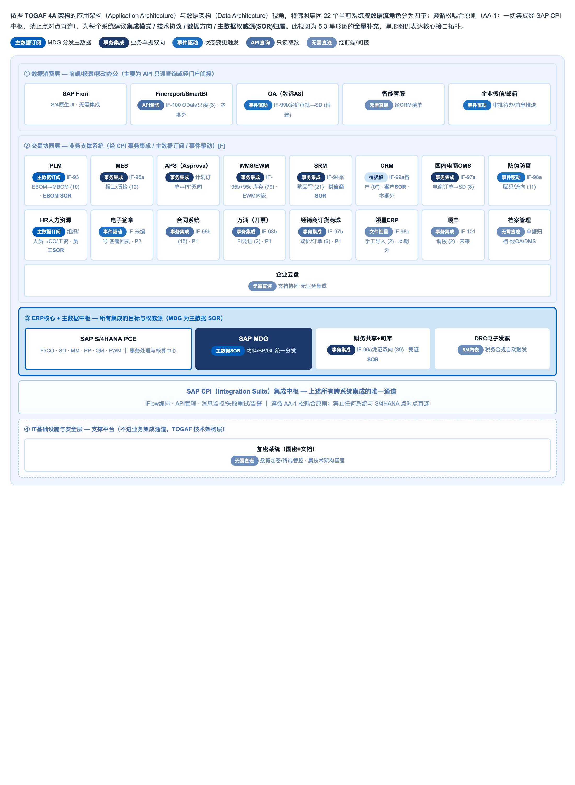
图 6-3 22 系统全量集成视图（TOGAF 4A 架构 · 集成方式建议）① 数据消费层（前端/报表/移动）：SAP Fiori（无需集成）、Finereport/SmartBI（API 只读 OData，本期外）、OA（事件驱动 IF-99b 定价审批→SD，待建）、智能客服（经 CRM 读单）、企业微信/邮箱（事件驱动 待办/通知）
② 交易协同层（业务支撑系统）：PLM（主数据订阅 IF-93，EBOM SOR）、MES（事务集成 IF-95a，报工/质检）、APS（事务集成 计划订单↔PP）、WMS/EWM（事务集成 IF-95b+95c，库存 79 场景）、SRM（事务集成 IF-94，供应商 SOR）、CRM（待拆解 IF-99a，客户 SOR，本期外）、聚水潭 OMS（事务集成 IF-97a）、防伪防窜（事件驱动 IF-98a）、HR（主数据订阅 员工/组织 SOR）、电子签章（事件驱动 签署回执 P2）、档案管理（经 OA/DMS 归档）、企业云盘（无业务集成）
③ ERP 核心 + MDG 主数据中枢：SAP S/4HANA PCE（FI/CO·SD·MM·PP·QM·EWM 事务处理与核算中心）、SAP MDG（主数据 SOR 物料/BP/GL 统一分发）、财务共享+司库（事务集成 IF-96a 凭证双向 39 场景，凭证 SOR）、DRC 电子发票（S/4 内嵌 税务合规）
SAP CPI 集成中枢条：上述所有跨系统集成的唯一通道，iFlow 编排、API 管理、消息监控/失败重试/告警
④ IT 基础设施与安全层：加密系统（国密+文档，数据加密/终端管控，属技术架构基座，不进业务集成通道）
7. 技术架构（TOGAF Phase D）
7.1 SAP S/4HANA PCE 部署架构
SAP S/4HANA PCE（Private Cloud Edition）是本次佛照技术架构的核心选择。PCE 介于公有云和本地部署之间，由 SAP 负责底层 HANA 数据库和 S/4HANA 应用层运维，佛照负责业务配置和应用管理，适合佛照规模（19 家法人、年交易量超 1000 万单据）和风险偏好。
Clean Core 原则：PCE 要求最大化使用标准功能，自定义开发（Z 代码）严格控制。现有 ECC 中的 Z 程序须经评估：①可用标准功能替代——废弃；②简单的——按 S/4HANA 标准 ABAP 重写；③复杂度高的——迁移至 BTP 侧扩展；④技术债较高的——纳入风险管理。
| PCE 核心特性 | 对佛照的价值 |
|---|---|
| SAP 管理底层基础设施 | 佛照无需投入大量 IT 资源管理 HANA ； SAP 负责补丁、备份、高可用 |
| 定期强制升级（每季度） | 自动获得最新功能（ DRC 更新、法规合规）；避免 ECC 老化 17 年重演 |
| BTP 扩展平台 | 核心定制部署在 BTP 侧扩展（ Side-by-Side ），保持 S/4HANA 核心整洁 |
| SAP Cloud ALM | 实施质量门控、上线后运维监控、变更管理追踪 |
| 合规与安全 | SAP 负责 ISO 27001 、 SOC 2 认证；数据中心在中国境内（数据主权合规） |
7.2 环境、网络与安全管理
三套环境
| 环境 | 用途 | 配置要求 | 访问控制 |
|---|---|---|---|
| 开发环境（ DEV ） | 系统配置开发、 ABAP 开发、接口调试 | SAP 标准 DEV 配置，数据量小 | 仅艾维登顾问 + 数智化部 BASIS |
| 质量保证环境（ QAS ） | SIT 、 UAT 、业务培训 | 配置与生产一致；生产数据脱敏导入 | 艾维登顾问 + 佛照关键用户 + 测试团队 |
| 生产环境（ PRD ） | 正式业务运营（ 2027 Q1 上线后） | 高可用配置； SAP PCE 负责底层 | 严格权限控制；变更经 ChaRM |
网络与安全设计
| 层次 | 设计要求 |
|---|---|
| 网络连接 | 总部（禅城） → SAP PCE 数据中心：专线（ MPLS/SD-WAN ），带宽 ≥100Mbps ，延迟 ≤50ms ；泰国 / 德国法人：国际专线或 SDWAN |
| 终端访问 | Fiori 浏览器访问（ Chrome/Edge/Safari ），建议仓库 / 车间配轻量级终端（ Thin Client ） |
| 身份认证 | SAP SSO 集成现有 AD 域；高权限账号 MFA ； Fiori Launchpad 统一入口 |
| 数据安全 | 传输层 TLS 1.3 ；存储层 HANA 加密；关键数据导出经审批；敏感字段字段级访问控制 |
| 权限管理 | 基于岗位权限（ RBAC ）； SoD 矩阵由 GRC 控制；超级用户生产环境禁用 |
集成原则：严禁新增点对点接口，所有外围系统通过 SAP CPI 统一集成，构建星型架构。MDG 作为主数据权威源统一分发；所有状态变更须回写 SAP 形成闭环。
7.3 技术组件与 Fiori 应用
| 技术组件 | 功能定位 | 与佛照的关系 |
|---|---|---|
| SAP HANA 数据库 | 内存计算，支持 OLTP+OLAP 混合 | PCE 由 SAP 管理；物料账从小时级降至分钟级 |
| SAP BTP | 云原生扩展平台；低代码 / 集成 / 数据分析 | 自定义开发优先 BTP 侧扩展； CPI 部署在 BTP ；未来 AI （ Joule ） |
| SAP CPI / Integration Suite | iPaaS ； iFlow 设计、 API 管理、消息监控 | 22 系统接口在 CPI 设计与部署；接口状态监控、失败重试、告警 |
| SAP Cloud ALM | 云应用生命周期管理；项目管理、运营监控、变更管理 | SIT/UAT 用例管理；上线后监控；变更请求 ChaRM |
| SAP Fiori | 现代化 UX 框架； Web 应用 | 替代传统 GUI ；重点：审批类、分析类、运营类应用 |
| SAP DRC | 中国本地化合规；增值税专票 / 普票电子化、泰国电子发票 | 替代金税接口；泰国 e-Tax Invoice 合规 |
| SAP GRC | 治理风险合规； SoD 冲突检测、超级用户管理 | 控制职责分离风险；关键操作审计日志 |
关键用户 Fiori 应用推荐
| 用户角色 | 推荐 Fiori 应用 | 业务价值 |
|---|---|---|
| 管理层 | Cash Flow Analyzer ｜ Profitability Analysis ｜ Inventory Turnover ｜ KPI Tile Board | 实时经营数据可视化，替代手工 Excel |
| 财务人员 | Manage Journal Entries ｜ Clear Outgoing Payments ｜ Consolidation Monitor ｜ Tax Report | 自动化财务操作，月结效率提升 |
| 销售人员 | Sales Order Fulfillment ｜ Customer 360 ｜ Credit Management ｜ Billing Document Worklist | 销售全流程可视化，信用状态实时查看 |
| 采购人员 | Manage Purchase Orders ｜ Supplier Evaluation ｜ Monitor PO Status | 采购全程系统化，合同执行可追踪 |
| 生产计划员 | MRP Monitor ｜ Production Order Management ｜ Demand-Driven MRP ｜ Capacity Utilization | MRP Live 实时结果，产能可视化 |
| 仓库管理员 | Warehouse Management Monitor （ EWM ）｜ Goods Receipt ｜ Goods Issue ｜ Inventory Count | 手持终端操作，无纸化仓库 |
7.4 数字化转型成熟度评估与提升路径
标准引用：本节成熟度评估框架引用国家标准 GB/T 43439-2023《信息技术服务 数字化转型成熟度模型与评估》。该标准将数字化转型成熟度划分为五个等级（一级至五级），涵盖组织、技术、数据、资源、数字化运营、数字化生产、数字化服务七大能力域，为企业数字化转型提供了系统性评估基准和路径指引。
7.4.1 GB/T 43439-2023 成熟度等级定义
GB/T 43439-2023 定义的五级成熟度特征如下：
| 等级 | 等级名称 | 核心特征 | 佛照当前状态评估 |
|---|---|---|---|
| 一级 | 初始级 | 组织具备转型意识，开始对实施数字化转型的基础和条件进行规划，在运营、生产、服务等业务领域基于内外部需求开展数字化转型探索工作。 | 部分业务域（如销售订单处理、基础财务核算）已实现信息化，但缺乏统一规划和数据标准；ECC 系统年久失修，多法人系统分散。 |
| 二级 | 基础级 | 组织应对数字化转型的组织、技术、数据和资源进行规划，完成局部业务的数据收集、整合与应用，初步具备基于数据的运营和优化能力。 | 财务域已具备基础报表能力；生产计划域有 MRP 框架但数据质量不足跑不起来；主数据分散维护，局部有数据整合意识但无统一平台。 |
| 三级 | 整合级 | 组织应具备数字化转型总体规划并有序实施，完成关键业务的系统集成和数据交互，在运营、生产和服务领域实现基于数据的效率提升。 | 2026 年目标：完成 S/4HANA Greenfield 基础建设、主数据治理与数据规范、CPI 集成框架搭建，实现核心业务系统的数据互通。 |
| 四级 | 优化级 | 组织应将数据作为支撑运营、生产和服务关键领域业务能力提升优化的核心要素，构建算法和模型为业务的相关方提供数据智能体验。 | 2027–2028 年目标：基于 S/4HANA 积累的数据资产，构建智能分析平台，实现预测性维护、智能排产、客户需求预测等数据驱动应用。 |
| 五级 | 引领级 | 组织应基于数据持续推动业务活动的优化和创新，实现内外部能力、资源和市场等多要素融合，构建独特生态价值。 | 中长期愿景：打通产业链上下游数据协同，构建照明行业数字化生态平台，实现从供应商到经销商的全链路数字化协同。 |
7.4.2 佛照现状成熟度评估
基于 GB/T 43439-2023 的七大能力域（组织、技术、数据、资源、数字化运营、数字化生产、数字化服务），对佛照当前（AS-IS）成熟度进行综合评估：
| 能力域 | 能力子域 | AS-IS 成熟度 | 主要差距 |
|---|---|---|---|
| 组织 | 转型战略 | L1 → L2 | 有数字化转型意愿，但缺乏系统性顶层规划；未设立专职 CIO/CDO 岗位。 |
| 组织 | 流程管理 | L2 | 核心流程（OTC/PTP/MTC）已有制度，但跨部门流程断点多，依赖人工衔接。 |
| 组织 | 变革管理 | L1 | 组织变革意识薄弱，用户对系统替换存在抵触，培训与沟通机制不健全。 |
| 技术 | 技术创新 | L1 → L2 | ECC 系统年久失修，技术债务重；对云原生、Fiori 等新技术应用有限。 |
| 技术 | 信息安全 | L2 | 基础安全机制具备，但缺乏系统性的 GRC/SoD 控制和审计日志体系。 |
| 数据 | 数据管理 | L1 → L2 | 无统一数据治理平台；物料/BP 主数据分散维护，一物多码、一客多码现象普遍。 |
| 数据 | 数据资产 | L1 | 数据资产意识薄弱，未建立数据资产目录；经营分析依赖手工汇总，数据口径不一致。 |
| 数据 | 数据业务化 | L1 | 数据仅用于事后统计，未嵌入业务流程实现实时决策（如信用风险预警、缺料预警）。 |
| 资源 | 基础设施 | L2 | IT 基础设施基本满足当前业务，但缺乏面向未来的弹性云架构和 DevOps 能力。 |
| 数字化运营 | 经营管理 | L1 → L2 | 月结 7–8 天，合并报表靠手工；经营分析会数据来自各部门汇总，口径不一致。 |
| 数字化生产 | 生产管控 | L1 → L2 | MRP 因数据质量差跑不起来，生产计划靠手工；缺乏实时生产进度看板。 |
| 数字化服务 | 客户服务 | L2 | 销售订单处理基本在线，但订单履行全链路不透明，客户无法实时查询交期和物流状态。 |
综合评估结论：佛照当前整体数字化转型成熟度处于 L1（初始级）向 L2（基础级）过渡阶段，部分业务域（财务核算、销售订单处理）已触及 L2，但数据治理、变革管理、数据业务化等关键能力域仍停留在 L1。与工信部对大型企业数字化转型的基本要求（L3 整合级）存在显著差距。
7.4.3 三年成熟度提升路径与实施规划
结合 GB/T 43439-2023 的等级定义和《制造业企业数字化转型实施指南》的分步实施原则，制定佛照 2026–2028 三年成熟度提升路径：
总体目标：2026 年完成基础建设和数据规范，从当前 L1–L2 达到 L2–L3（基础级向整合级过渡）；2027 年完成核心项目卡片实施，达到 L3–L4（整合级向优化级过渡）；2028 年实现数据智能与生态协同，全面达到 L4（优化级）。
| 年度 | 成熟度目标 | 关键任务 | 对应项目卡片 | 预期成效 |
|---|---|---|---|---|
| 2026 筑基年 | L1–L2 → L2–L3 | • 完成数字化转型总体规划（对标 GB/T 43439 能力域逐项制定目标）； • 设立 CIO/CDO 岗位，组建数字化转型专职团队； • 建立主数据治理体系，完成物料/BP/科目三大类主数据标准化； • 搭建 S/4HANA PCE 云平台数字底座和 CPI 集成中枢； • 完成核心系统间接口框架搭建，实现关键业务系统的初步数据互通。 | PC01 数字底座 PC02 主数据治理 PC03 集成架构 | 组织层面建立转型治理体系；数据层面实现主数据统一标准和跨系统互通；技术层面完成云平台和集成框架搭建。 |
| 2027 攻坚年 | L2–L3 → L3–L4 | • 完成 S/4HANA 核心业务模块（FI/CO/SD/MM/PP/QM/PS）上线； • 打通 OTC/PTP/MTC 三大端到端流程，实现跨部门流程自动化； • 完成泰国工厂本地化合规（泰铢记账、增值税申报、IFRS 合并）； • 实现集团合并报表自动化（Group Reporting），月结从 7–8 天缩短至 ≤2 天； • 建立基于数据的运营优化能力（信用风险预警、库存可视化、生产进度看板）。 | PC04 流程蓝图 PC05 财务核心 PC06 销售全链路 PC07 供应链协同 PC08 质量追溯 | 运营层面实现关键业务流程的系统集成和数据交互；生产层面实现计划-制造-质量的全链路数字化；服务层面实现客户需求到订单履行的端到端可视。 |
| 2028 智能年 | L3–L4 → L4 | • 构建数据智能分析平台，实现基于算法和模型的业务决策支持； • 部署预测性维护、智能排产、客户需求预测等 AI 驱动应用； • 深化海外合规（德国 FZ33、潜在新增海外工厂）； • 探索产业链上下游数据协同（供应商协同平台、经销商门户）； • 建立持续迭代优化机制，基于数据反馈不断优化业务流程。 | PC09 海外深化 PC10 数据智能 PC11 生态协同 | 数据成为支撑运营、生产和服务关键领域业务能力提升优化的核心要素；构建算法和模型为业务相关方提供数据智能体验。 |
7.4.4 制造业数字化转型实施指南参考
本节实施路径同时参考了《制造业企业数字化转型实施指南》的核心原则：
整体谋划，分步实施：遵循“规划-实施-评估-优化”持续改进的管理方法，由点及面、由浅及深、由易及难分步推进。2026 年聚焦数据基础和平台搭建（“点”），2027 年聚焦核心业务模块上线（“面”），2028 年聚焦数据智能和生态协同（“深”）。
问题导向，系统推进：聚焦 701 条原始需求识别的共性问题（如主数据混乱、合并报表手工、生产计划靠经验），以 23 个高价值场景为切入点，以场景转型之“和”形成企业整体转型之“解”。
需求导向，分类施策：立足佛照作为大型制造业企业的实际，明确转型重点为“供应链协同 + 财务全球化 + 生产计划精益化”，形成差异化的转型实施方案。同时兼顾泰国工厂的特殊本地化需求。
关键结论：通过引入 GB/T 43439-2023 成熟度模型，佛照数字化转型的目标从“系统上线”升级为“成熟度跃迁”。2026 年的核心任务不是功能上线，而是建立从 L1 到 L3 所需的组织、数据、技术三大基础；2027 年的核心任务是通过核心业务模块上线实现关键业务的系统集成和数据交互；2028 年的核心任务是让数据成为业务优化的核心要素，构建算法和模型驱动的智能体验。这一路径与 GB/T 43439 的等级定义完全对齐，也与《制造业企业数字化转型实施指南》的“整体谋划、分步实施”原则高度一致。
8. 架构过渡规划与治理
8.1 架构差距量化评估
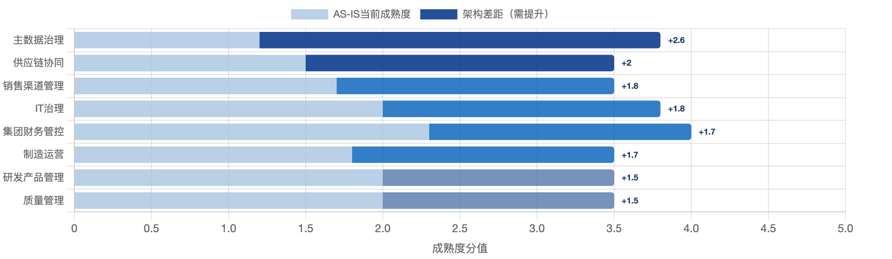
| 架构域 | AS-IS | TO-BE | 差距 | 主要改进举措 | 实施风险 |
|---|---|---|---|---|---|
| 主数据治理 | 1.2 | 3.8 | 2.6 | 部署 MDG ；建立数据治理组织； 6.2 万物料清洗 | 高（工作量最大，需最早启动） |
| 集团财务管控 | 2.3 | 4.0 | 1.7 | Group Reporting 上线；统一科目表；合并抵消自动化 | 中 |
| 供应链计划协同 | 1.5 | 3.5 | 2.0 | MRP Live ； EWM 升级； MES/WMS 集成 | 高（多系统集成） |
| 销售与渠道管理 | 1.7 | 3.5 | 1.8 | SD 价格条件；信用管理； OA→SAP 定价集成 | 中 |
| 制造与生产运营 | 1.8 | 3.5 | 1.7 | PP 优化； MES 集成；成本核算规范化 | 中 |
| 质量管理 | 2.0 | 3.5 | 1.5 | QM 深化；批次追溯；质检设备集成 | 低 |
| 研发与产品管理 | 2.0 | 3.5 | 1.5 | PLM 集成优化； EBOM→MBOM 标准化 | 低 |
| 数字化 IT 治理 | 2.0 | 3.8 | 1.8 | CPI 中枢； Cloud ALM ；权限与 GRC 治理 | 中 |
8.2 架构过渡路线图
| 里程碑 | 时间 | 关键交付 |
|---|---|---|
| 数据清洗启动 | 2026 年 6-8 月 | 启动物料主数据清洗（ 6.2 万 →3.5 万）； MDG 设计确认；数据治理组织成立 |
| 架构蓝图评审通过 | 2026 年 8 月31 日 | 本报告（第二 ~ 六章）经甲方审核； L1-L3 蓝图签字；接口方案确认；集成测试计划 |
| 系统配置完成 | 2026 年 9-11 月 | S/4HANA 核心模块配置完成； MDG 配置完成； CPI 接口开发完成；主数据首次试迁移 |
| SIT/UAT 测试通过 | 2026 年 12 月 | 三大端到端流程 100% 场景验证；致命 / 严重缺陷 0 个；关键用户培训完成 |
| 正式上线 | 2027 年 1 月 1 日 | 生产系统切换（ Big Bang ， 19 家法人同步）；数据迁移完成（准确率 100% ）； ECC 只读 |
| 稳定运行 6 个月 | 2027 年 Q3 | 首个会计月月结 ≤5 天；三张报表准确；后续优化清单 |
8.3 架构风险与治理
架构风险登记
| # | 架构风险 | 影响程度 | 应对措施 |
|---|---|---|---|
| AR-1 | 主数据清洗周期不足： 6.2 万物料清洗工作量超预期，迁移准确率难达 100% | 高 | 2026 年 6 月即启动；配置专职人员；三轮模拟迁移 |
| AR-2 | MES/WMS 集成复杂度超预期： IF-95b/95a 改造量大，影响上线窗口 | 高 | 蓝图阶段锁定接口方案；供应商签署配合协议；关键路径管控 |
| AR-3 | 广晟集团系统边界未明确：共享 / 司库 / 合并系统边界未定义，可能范围蔓延 | 中 | 蓝图阶段明确边界协议；超出边界需求纳入变更请求 |
| AR-4 | PCE 季度升级兼容性：强制升级可能影响 Z 程序或 CPI 接口 | 中 | 遵守 Clean Core ；自定义部署 BTP ；升级前 QAS 测试 |
| AR-5 | 关键用户参与不足：业务骨干无法投入足够时间 | 中 | 时间承诺在项目章程明确（李泽华签字）；周例会；变革管理 |
架构治理委员会（ARB）
| 角色 | 成员 | 职责 | 会议频率 |
|---|---|---|---|
| ARB 主席 | 主管副总经理 | 最终裁决权；重大架构决策批准；资源协调 | 月度 / 重大变更时 |
| 首席架构师 | 艾维登架构负责人 | 架构一致性把控；技术方案评审 | 每次评审 |
| IT 架构代表 | 数智化部负责人 | IT 可行性评估；基础设施影响 | 每次评审 |
| 业务架构代表 | 财务 + 供应链 | 业务需求合理性；流程影响 | 每次评审 |
| 数据治理代表 | 数智化部数据骨干 | 主数据变更影响；数据质量 | 每次评审 |
架构度量指标（KPI）
| 度量维度 | 指标 | 当前值 | 目标值 | 衡量方法 |
|---|---|---|---|---|
| 数据质量 | 物料主数据准确率 | <70% | 99% | MDG 数据质量报告（月度） |
| 流程效率 | 月结关账天数 | 7-8 个工作日 | ≤2 个工作日 | FI 月结完成时间 |
| 计划能力 | MRP 计划有效执行率 | <30% | ≥85% | PP 计划执行率报表（周度） |
| 集成质量 | 接口成功率 | 不稳定（ SRM 有尾差） | ≥99.5% | CPI 接口监控仪表盘 |
| 运营效率 | 库存周转天数 | 109 天 | ≤75 天 | EWM 库存分析（季度） |
| 应收管理 | 应收账款周转天数（ DSO ） | 90 天 | ≤70 天 | FI 应收分析（月度） |
| 系统质量 | Z 程序数量 | 待 ECC 扫描确认 | 减少 60% | Custom Code 分析报告 |
| 治理质量 | 架构原则符合率 | N/A （基线待建） | ≥90% | ARB 评审合规检查（季度） |
9. 高价值方案专题落地映射
9.1 23 高价值方案专题 TOGAF 四层映射
| 专题编号 | 专题名称 | 需求条数 | BA | DA | AA | TA |
|---|---|---|---|---|---|---|
| S01 | 物料主数据治理 | 26 | 25% | 40% | 25% | 10% |
| S02 | 客户信用管理 | 9 | 40% | 20% | 35% | 5% |
| S03 | 跨公司转卖 | 10 | 45% | 15% | 30% | 10% |
| S04 | 销售订单全链路 | 104 | 40% | 20% | 30% | 10% |
| S05 | 销售价格体系 | 52 | 40% | 20% | 35% | 5% |
| S06 | 海外合规 | 11 | 20% | 20% | 35% | 25% |
| S07 | 制造成本还原 | 25 | 25% | 25% | 40% | 10% |
| S08 | 财务组织+科目主数据 | 20 | 20% | 45% | 25% | 10% |
| S09 | 应收清账+BIP接口 | 13 | 25% | 20% | 40% | 15% |
| S10 | 集团合并报表 | 60 | 20% | 40% | 30% | 10% |
| S11 | 销售项目核算 | 6 | 30% | 20% | 40% | 10% |
| S12 | 研发投入产出 | 11 | 35% | 20% | 35% | 10% |
| S13 | 供应商绩效 | 61 | 45% | 20% | 25% | 10% |
| S14 | 采购价格透明化 | 3 | 40% | 25% | 25% | 10% |
| S15 | 采购配额管理 | 1 | 45% | 20% | 25% | 10% |
| S17 | 库存可视化 | 58 | 20% | 45% | 25% | 10% |
| S18 | 主生产计划MPS | 8 | 35% | 20% | 35% | 10% |
| S19 | MRP物料需求计划 | 13 | 25% | 20% | 45% | 10% |
| S20 | 生产进度看板 | 23 | 20% | 45% | 25% | 10% |
| S21 | 质量追溯 | 30 | 35% | 25% | 30% | 10% |
| S23 | BOM全生命周期 | 24 | 25% | 25% | 35% | 15% |
| 管理需求-移出 | 管理需求-移出 | 69 | 60% | 15% | 20% | 5% |
| 数字化规划-非专题 | 数字化规划-非专题 | 35 | 45% | 20% | 25% | 10% |
| 待定界 | 待定界 | 24 | 40% | 20% | 30% | 10% |
| 需人工判定 | 需人工判定 | 5 | 40% | 20% | 30% | 10% |
下表给出每个专题在业务架构（BA）、数据架构（DA）、应用架构（AA）、技术架构（TA）上的权重分解。权重依据《23专题-TOGAF四层架构映射矩阵》中各专题的四层要素重要性设定，用于量化 701 条需求跨 4A 的分布。
9.1.1 23 专题 TOGAF 四层权重矩阵
说明：本图以每条需求的主导 TOGAF 4A 维度为中间层，左侧按问题领域归集为业务域，右侧汇总到 23 个高价值专题及非本期/管理需求桶。由于每个专题本身均跨业务/数据/应用/技术四层，下表给出各专题的 4A 权重分解。

以下将 23 个专题逐一映射到 TOGAF 四层架构（业务/应用/数据/技术），作为第三~六章的专题落地索引。各专题决策均已在专项研讨会上确认，作为后续配置设计和接口开发的不可更改基线。
| 专题 | 业务架构 | 应用架构 | 数据架构 | 技术架构 |
|---|---|---|---|---|
| S01 物料主数据治理 | 物料分类、编码规则、生命周期 | MM 、 MDG-M 、 PLM | MARA/MARC/MARD 、分类特征 | ABAP Dictionary 、 IDoc 、主数据复制 |
| S02 客户信用管理 | 信用审批、风险评级、账期控制 | SD 信用、 FI-AR 、 Credit Mgmt | KNA1/KNKK 、 UKM 信用段 | 信用规则引擎、实时监控 |
| S03 跨公司转卖 | 跨公司订单、内部结算、利润中心 | SD-STO 、 IC 内部供应链、 PCA | 跨公司交易流、 VBFA 凭证流 | 公司间对账、转储单自动创建 |
| S04 销售订单全链路 ⚠️ | 订单承诺、交期预警、在途可视 | SD-OTC 、 ATP 、 TM 运输 | VBAK/VBAP 、交货单 | 实时可用性、 Fiori 看板 |
| S05 销售价格体系 | 定价策略、折扣、区域差异定价 | SD 定价、条件技术 | 价格条件表、定价过程 | 定价公式、 BADI 、批量导入 |
| S06 海外合规 | 泰国财务本地化、多语言多货币 | FI 本地化、跨国账套 | 泰国科目、税码、汇率表 | 泰国税务接口、本地化包 |
| S07 制造成本还原 | 产品成本核算、成本卷积、差异分析 | CO-PC 、 CO-PA | 成本要素、成本中心、作业类型 | 成本卷积算法、分割评估 |
| S08 财务组织 + 科目主数据 | 科目精简（ 1800→600 ）、组织架构 | FI 主数据、科目表 | SKA1 、组织架构 | 科目映射规则、迁移工具 |
| S09 应收清账 +BIP 接口 | 应收清账流程、财务共享集成 | FI-AR 、 BIP | 应收凭证、清账规则 | 接口中间件、对账逻辑 |
| S10 集团合并报表 | 法定合并、抵消调整、三大报表 | FI-LC 、 Group Reporting | 合并范围、抵消分录 | 合并规则引擎、报表公式 |
| S11 销售项目核算 ⚠️ | 按客户 / 项目销售核算与分析 | CO-PA 、项目结构 | 项目主数据、收入成本 | 项目核算逻辑 |
| S12 研发投入产出 | 研发费用归集、项目 ROI 、资本化 | CO-PS 、 R&D | 研发项目、费用要素 | 项目结算、资本化判定 |
| S13 供应商绩效 | 交期管理、绩效评价、 SRM 优化 | MM-SRM 、供应商评估 | LFA1 、交期记录 | SRM↔SAP 接口、 KPI 计算 |
| S14 采购价格透明化 | 比价分析、价格透明、采购审批 | MM 采购、询价比价 | 采购 info 记录、报价历史 | 比价算法、价格趋势 |
| S15 采购配额管理 | 配额分配、智能订单分配、供应商协同 | MM 配额、 Source List | 配额主数据、分配规则 | 自动分配算法、供应商协同 |
| S16 产前齐套性预警 | 齐套检查、缺料预警、 PMC 协同 | PP-MRP 、可用性检查 | 需求清单、库存可用量 | 齐套算法、预警推送 |
| S17 库存可视化 ⚠️ | 多维库存查询、库龄分析、呆滞预警 | MM-IM 、 BI 报表 | 库存事务 (MKPF/MSEG) 、库龄 | 多维查询引擎、 Fiori App |
| S18 主生产计划 MPS | MTS+MTO 混合、主计划编制、 S&OP | PP-SOP 、需求管理、 MPS | 计划独立需求、 MPS 计划 | MPS 运算逻辑、需求优先级 |
| S19 MRP 物料需求计划 | MRP 运算、安全库存、采购建议 | PP-MRP 、采购申请 | MRP 参数、计划订单 | MRP 算法、批量处理 |
| S20 生产进度看板 | 计划 vs 实际产出、进度跟踪 | PP 生产订单、 BI 报表 | 生产订单 (AUFK) 、报工记录 | 实时数据采集、看板 |
| S21 质量追溯 | 批次追溯、质检流程、不合格品处理 | QM 、批次管理 | 质检批 (QALS) 、批次 (MCH1) | 批次追溯链、质量状态流转 |
| S22 QM 合格率统计 | 合格率、缺陷分析、趋势统计 | QM 统计、 BI 报表 | 质检结果、缺陷代码 | 统计算法、趋势图表 |
| S23 BOM 全生命周期 | MBOM 在 PLM 、 EBOM 转 MBOM 、 ECN | PLM 、 PP-BOM 、 ECN | BOM(STPO) 、变更记录 | PLM↔SAP 接口、 BOM 版本管理 |
9.2 架构决策记录（AD-01 ~ AD-10）
本章决策记录遵循 TOGAF ADM Phase G 的 Architecture Decision Log 规范。所有变更须经 ARB 评审批准。
| 决策编号 | 决策内容 | 决策时间 | 决策依据 |
|---|---|---|---|
| AD-01 | 新编码规则采用方案 C （折中 / 新老划断）：新物料 11 位统一规则，旧物料建立映射表 | 2026-07-29 | 编码规则研讨会（班家亮主持） |
| AD-02 | 利润中心按 5 个事业部启用， PC 编码 4 位（ PC10 通用照明 /PC20 车灯 /PC30 LED 封装 /PC40 贸易 /PC50 其他） | 2026-07-24 | 数据治理研讨会 |
| AD-03 | 标准成本三层体系：计划价（月度核定） + 标准价（ CK40N 批量） + 实际价（移动平均），偏差 >20% 自动预警 | 2026-07-14 | 成本精细化讨论会（郭裕主持） |
| AD-04 | 泰国 FZ40 ：泰铢本位币 + DRC 税务合规 + 三层定价，本期 P0 必做 | 2026-07-21 | 泰国专项讨论会（陈宇清主持） |
| AD-05 | MDG 启用顺序： MDG-M + MDG-C/S + MDG-F 为 P0 ； MDG-BOM 为 P1 | 2026-07-24 | 数据治理研讨会 |
| AD-06 | 批次管理本期不启用；精准成本核算 / 不良品成本延至二期 | 2026-07-24 | FICO 需求讨论会（李一帜拍板） |
| AD-07 | 资产核算边界：共享承接流程 / 档案， SAP 承接核算，双方通过编号关联 | 2026-06-29 | 财务共享与资产模块讨论会 |
| AD-08 | 聚水潭保持 SaaS ，不建议本地部署； SAP 不承接全部前端电商订单明细 | 2026-07-07 | 聚水潭集成交流会 |
| AD-09 | 管理口径合并报表本期不落地，仅实现法定合并报表（ Group Reporting ） | 2026-07-29 | FICO 需求汇报会 |
| AD-10 | PLM-MDG-SAP 数据流： PLM→MDG→SAP （单向）； MBOM 接口支持 ECN 变更回传 | 2026-07-30 | PLM-MDG 接口研讨会 |
9.3 需求证据与行动项
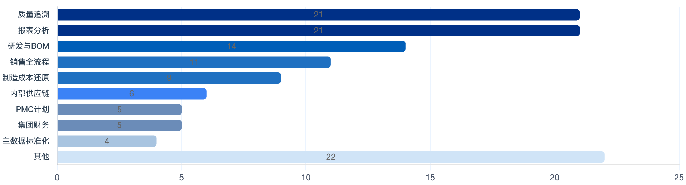
本企业架构设计报告在四层架构骨架上完成 23 专题落地映射与 215 条调研证据的可追溯挂接，架构完整性达到可进入蓝图详设的基线水平。需求库 V5（704 行）中 215 条架构级证据按 TOGAF 四层聚合：业务架构层 129 条（60%）、应用架构层 85 条（40%）；数据/技术层为调研盲区，须蓝图阶段主动补访。
核心结论：本报告建立的 L1-L3 企业架构蓝图，以 SAP S/4HANA PCE 为核心底座、MDG 为主数据治理中枢、CPI 为集成神经网络，系统性回应了 689 条业务调研问题中识别的六大架构驱动因素。架构设计的最高优先级是主数据治理——这是其他所有架构改进的前提条件，必须在 2026 年 10 月 底前完成 MDG 设计并启动数据清洗。